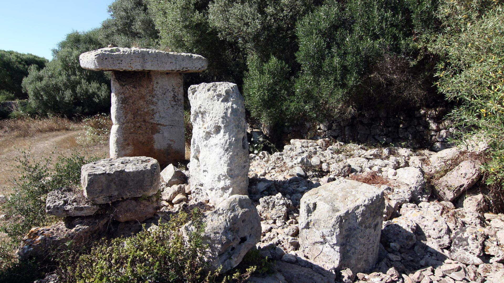

Informacion General
El poblado talayótico de Torre Trencada conserva la única mesa completa del término municipal. Durante el recorrido por el interior del poblado se pueden contemplar los vestigios arqueológicos y la riqueza de su patrimonio etnológico.
El yacimiento arqueológico de Torre Trencada se sitúa en el término municipal de Ciutadella. El poblado conserva un talayot de grandes dimensiones, así como distintos hipogeos y cuevas naturales que fueron usadas como tumbas durante la prehistoria. Cabe destacar la existencia de una sala hipóstila que aparentemente se diseñó para recoger el agua de la lluvia por escorrentía, por lo que este espacio se convirtió en un aljibe. Sin embargo, el poblado destaca por haber conservado una magnífica mesa, como elemento central del santuario, cuyos restos todavía se distinguen entallonados en una pared moderna. El capitel de la mesa se sostiene gracias a una pilastra, también con capitel, que se adosó a la parte trasera y que le da estabilidad.
Del conjunto también cabe destacar una necrópolis de tumbas antropomorfas excavadas en la roca que datan de la Alta Edad Media. Muy cerca, en la época moderna se construyó un ingenioso sistema de recogida de agua por escorrentía excavada en la roca, que dirige el agua de la lluvia hacia dos aljibes también excavados. Es probable que se trate de dos antiguos hipogeos prehistóricos.